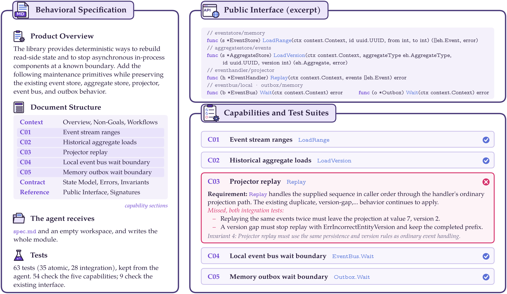
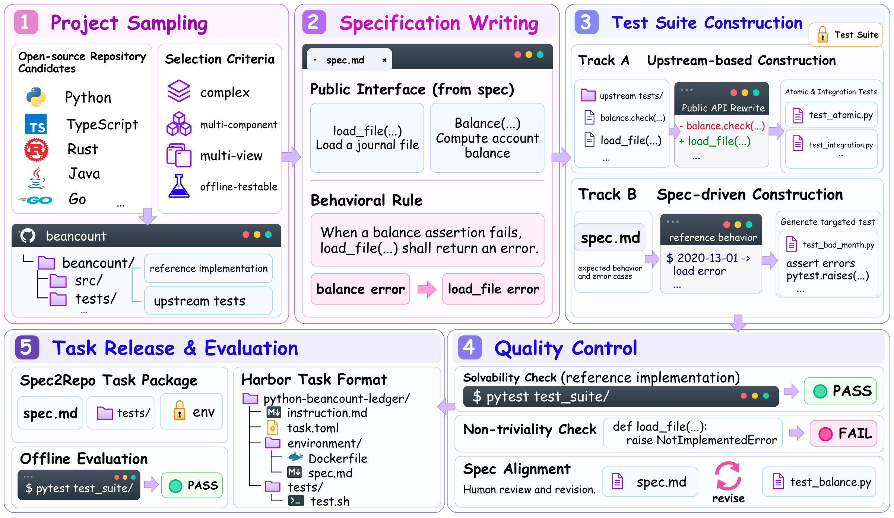
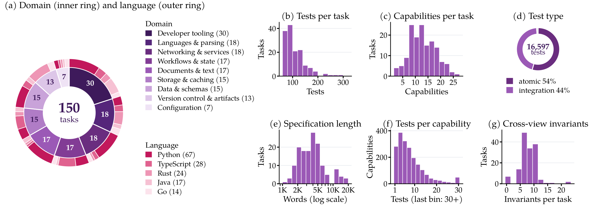
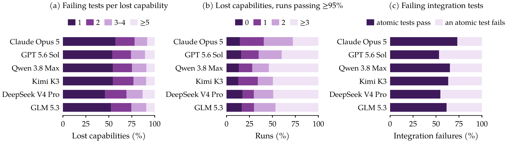
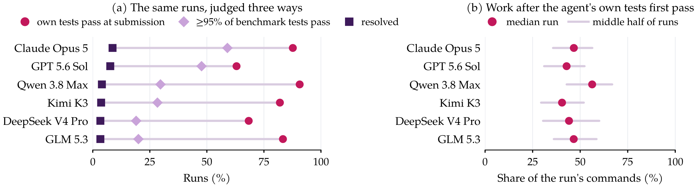

Six frontier models, each under the bash-only mini-swe-agent and a production CLI agent.
Ranked by FCR, the share of specified capabilities whose hidden tests all pass. Click a column to sort.
A real run from the leaderboard, on the Go task alertmanager. Its three failing tests each check a behavior of a different capability,
and a capability counts only when every one of its tests passes.
alertmanager · 3 capabilities, 72 hidden testsCoding agents are increasingly expected to build software from scratch, working from a specification and making every design decision themselves. A benchmark for this setting should therefore leave the design to the agent and test only the behavior that the specification states. Existing repository-construction benchmarks instead grade with a reference implementation's tests, which can be passed only if the specification names its internal modules and classes, fixing much of the design in advance.
We introduce Spec2Repo, a benchmark of 150 tasks in five programming languages in which an agent receives only a behavioral specification and an empty workspace. Hidden tests check the stated requirements both individually and in multi-component workflows, and reach the submission only through the declared public interface. The tests are grouped by the 1,962 capabilities the specifications define, and we report the functional completion rate (FCR), the fraction of capabilities whose tests all pass.
Across six frontier models and two agent scaffolds, the strongest configuration delivers 73.2% of the specified capabilities but resolves only 8.7% of tasks. Undelivered capabilities fail most often at the hand-offs between components, and mostly in code that exists but is wrong. Agents check their work with tests written from the same reading of the specification as the code, and therefore stop when they are convinced, not when they are correct.
Each task is a single Markdown specification and a hidden test suite, packaged in the Harbor task format.

Components of a task, shown on a Go task. The behavioral specification is all the agent receives besides an empty workspace. It opens with a product overview, then organizes requirements into context, one section per capability, a contract that applies across capabilities (state model, errors, invariants), and a reference section declaring the public interface, the only symbols the tests may call. A capability counts as delivered only when all of its tests pass.

Sizable open-source projects that coordinate several components, expose several public views, and ship tests that run offline.
Public interface plus EARS requirements, organized by capability. Module layout and helpers stay the agent's choice.
Upstream tests rewritten against the public interface, and generated tests kept only when a stated requirement implies them.
Each test passes on the reference implementation, fails on an interface-only stub, and traces to a stated requirement.
Specification and hidden tests packaged as a Harbor task and evaluated offline in a fresh container.
Each test checks a behavior the specification states, and a capability combines several behaviors into one feature a user relies on. FCR is the all-tests rule of function- and issue-level benchmarks, applied to the smallest unit a user relies on.
We also report the test pass rate, the share of tests that pass, and whether a task is resolved, with every test passing.
Click a test to flip it. Watch the three metrics diverge.
Each column is a task, each row a configuration, colored by FCR. Hover for details, click to pin a task.

Distribution of the 150 tasks. (a) Application domain and language. (b)–(g) Per-task numbers of tests and capabilities, test type, specification length, tests per capability, and cross-view invariants.
Every configuration passes most tests, yet its FCR trails its pass rate by 19 to 32 points, and none resolves more than 8.7% of tasks.
Lost capabilities usually miss one or two of the behaviors their section states, and about half miss exactly one.
Each capability is checked by eight tests on average, so a few failing behaviors break whole features.
Among integration tests labeled with the atomic tests they build on, most failures occur while all of those atomic tests pass.
It returns a wrong value, leaves inconsistent state, raises the wrong error, or crashes. In 22.7% no code handles the condition, and in 5.8% the interface is absent.
agate, Claude Opus 5 with mini-swe-agent
Capabilities are lost to one or two failing behaviors. (a) Failing tests per lost capability. (b) Capabilities lost by runs passing at least 95% of tests. (c) Failing integration tests split by whether the atomic tests of the parts they chain all pass.
These runs deliver no more of the specification than the average run, a mean FCR of 60% against 59%.
Few of the agents' own tests combine the interfaces of two or more capabilities.
Agents' tests exercise undelivered capabilities as often as delivered ones, with assertions that follow the implementation.
Runs with more steps than the median deliver more in only 2 of 12 configurations, and more test commands in only 3.
A requirement the agent misreads is wrong in its code and its tests together, and one it overlooks is absent from both.

Agents are convinced long before they are correct. (a) Runs judged by their own last test run, by passing at least 95% of benchmark tests, and by resolving the task. (b) Share of a run's commands issued after its own tests first all pass.
The tasks and hidden tests are not publicly released. To have a model or scaffold evaluated on Spec2Repo, contact the authors.
Each run starts from the specification and an empty workspace in a fresh container, with an 8-hour budget and network access limited to the model API and a package registry.
The repository is built in a fresh container and the hidden tests run without network access. The agent never sees the tests or the reference implementation.
FCR, test pass rate, and resolved tasks over all 150 tasks, the same columns as the leaderboard.
@article{xiao2026spec2repo,
title = {Spec2Repo: Benchmarking Repository Construction against Behavioral Specifications},
author = {Xiao, Chuan and Jiao, Zhengbo and Cheng, Yiming and Tian, Juanxi and
Xu, Weiwei and He, Bingxiang and Xian, Hongyu and Chen, Zhikang and
Cui, Chenhang and Huang, Rui and Hou, Jiadong and Li, Zhiqian and
Liu, Junming and Chen, Tailai and Tang, Yuxin and Zhou, Yanghao and
Ni, Jiahao and Li, Yangfu and Zhou, Yanhan and Liu, Chenyu and
Zhou, Zijian and Zhang, Kaijie and Tang, Weidong and Yan, Xin and
Wang, Qinglong and Pu, Tianle and Jing, Lingxiao and Zhu, Bofan and
Zhang, Zifan and Jiang, Tianyi and Wang, Baojie and Fan, Haizhao and
Cui, Fushun and Xie, Qinlei and Hua, De and Zhang, Chenxu and
Shen, Jianghan and Li, Haitian and Luo, Mingyu and Rong, Shanyu and
Li, Wanhua and Guo, Zhijiang and Chen, Mouxiang and Wang, Qi and
Zhang, Jingyuan and Wang, Wei and Zhao, Bing},
journal = {arXiv preprint},
year = {2026}
}